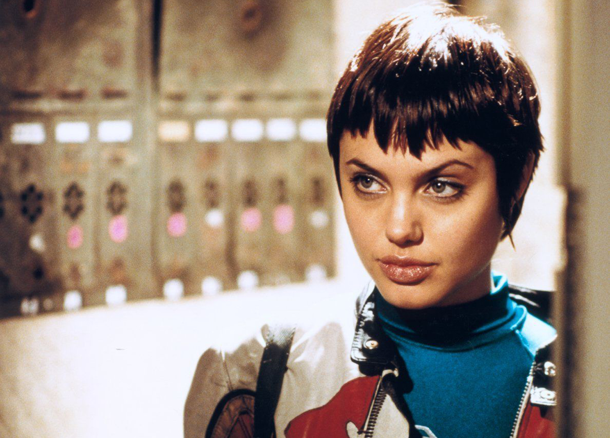

Hack the Planet, Archive the World
Posted: 15/03/2026
Censorship is a poison
Recently the website hrt.cafe, a vital hub of resources and information about DIY transgender healthcare was taken down by the UK and US government. This has made me think about archiving and how revolutionary of an act it is. I have been making a very active effort recently to preserve media that I love and resources that I think are really important.
Things feel very permanent online, but I believe that that is very far from the case. Websites get taken down, links are left to rot, streaming sites will alter artistic works or remove whole episodes to fit within investors interests.
If there is art out there that you love, you have an obligation to preserve it, because if no one does it can be lost forever.


I have been listening to Wendy Carlos’s music recently, specifically her ambient works from the 70s. The album Sonic Seasonings (1972) was unbelievably hard to track down, I couldn’t find it on any music streaming site, Limewire came up bare, eventually I found a rip of the CD on a flac sharing service called Nicotine.
Wendy Carlos is a hugely important figure in experimental music, but it seems people only remember her works from film and not the (in my opinion) far more interesting ambient albums.
Don’t even get me started on how many of my favourite directors have movies that are functionally lost media. I can't stress enough that no matter how safe you think a work is it can and will be lost eventually.
The time to start archiving is NOW. Censorship is only going to get worse and time is only going to progress. Physical media is an important step in this but I honestly think that having the digital files is far more valuable.
A digital file can be copied infinitely, it can and should be SHARED
Websites and information are also so corruptible with government censorship and now AI, misinformation is more rampant than ever.
KEEP VALUABLE AND VULNERABLE INFORMATION LOCALLY
I have copies of Wikipedia (from 2021 as to not have any AI written entries) as well as several valuable resources about Trans Healthcare saved locally. It is actually unbelievably easy to do using this tool: https://www.httrack.com/
Who knows what the world is going to look like in 5 years. The internet is going to change massively in that time too. Preserve what you can before it is gone.
In the words of the Wii quit screen, "Anything not saved will be lost"


If you read this far down I love you.
I'm going to watch Hackers (1995) tonight and you should too.